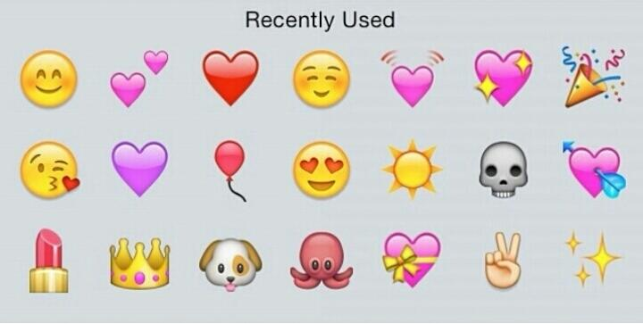

表情包，也就是Emoji表情的集成，作为一种图形化，视觉化，符号化的表现形式，在现代人的移动通信沟通之中占有非常重要的地位。在最近公开的一年一度的牛津词典年度词汇中，属于2015年的年度词汇罕见的出现了表情包Emoji，这就是大家最爱使用“Face with Tears of Joy”喜极而泣的笑脸，哭笑表情的使用量占所有emoji的20%。
虽然这个表情在IPhone的表情面板中的小角落，但是也拦不住大家的喜爱之情。
在以qq，微信，微博为主的天朝网络社交圈，人们总会调侃的说
现在的聊天好友，不先斗上几回合表情包，都不好意思正经说话。
Emoji 的前世今生Subtext for header
石刻壁画
表情包的发展是讯息沟通传播中的图像化表现，原始时期，没有发明文字的原始人类便用简单的绘画图案来记录事实或者陈述动作的行为，这种行为不限于地区或者民族，广泛的存在，如云南沧源石刻壁画，拉斯科洞窟壁画，原始人类用生动的抽象绘画记录下史前的历史片段。